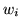
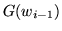
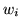
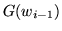

A deterministic word-to-class mapping like this has some advantages
over a word  -gram model since the reduction in the number of
distinct histories reduces the storage space and training data
requirements whilst improving the robustness of the probability
estimates for a given quantity of training data. Because multiple
words can be mapped to the same class, the model has the ability to
make more confident assumptions about infrequent words in a class
based on other more frequent words in the same class14.5 than is possible in the word
-gram model since the reduction in the number of
distinct histories reduces the storage space and training data
requirements whilst improving the robustness of the probability
estimates for a given quantity of training data. Because multiple
words can be mapped to the same class, the model has the ability to
make more confident assumptions about infrequent words in a class
based on other more frequent words in the same class14.5 than is possible in the word  -gram case - and
furthermore for the same reason it is able to make generalising
assumptions about words used in contexts which are not explicitly
encountered in the training text. These gains, however, clearly
correspond with a loss in the ability to distinguish between different
histories, although this might be offset by the ability to
choose a higher value of
-gram case - and
furthermore for the same reason it is able to make generalising
assumptions about words used in contexts which are not explicitly
encountered in the training text. These gains, however, clearly
correspond with a loss in the ability to distinguish between different
histories, although this might be offset by the ability to
choose a higher value of  .
.
The most commonly used form of class  -gram model uses a single
classification function,
-gram model uses a single
classification function,  , as in equation 14.6,
which is applied to each word in the
, as in equation 14.6,
which is applied to each word in the  -gram, including the word which
is being predicted. Considering for clarity the bigram14.6case, then given
-gram, including the word which
is being predicted. Considering for clarity the bigram14.6case, then given  the language model has the terms ,
, and
 available to it. The probability
estimate can be decomposed as follows:
the language model has the terms ,
, and
 available to it. The probability
estimate can be decomposed as follows:
It is assumed that is independent of and and that is independent of , resulting in the model:
Almost all reported class  -gram work using statistically-found classes
is based on clustering algorithms which optimise
-gram work using statistically-found classes
is based on clustering algorithms which optimise  on the basis
of bigram training set likelihood, even if the class map is to be used
with longer-context models. It is interesting to
note that this approximation appears to works well, however,
suggesting that the class maps found are in some respects ``general''
and capture some features of natural language which apply irrespective
of the context length used when finding these features.
on the basis
of bigram training set likelihood, even if the class map is to be used
with longer-context models. It is interesting to
note that this approximation appears to works well, however,
suggesting that the class maps found are in some respects ``general''
and capture some features of natural language which apply irrespective
of the context length used when finding these features.